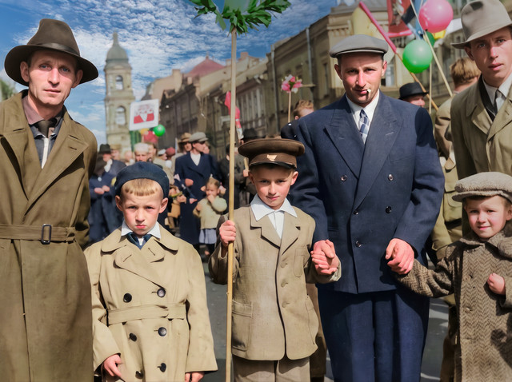
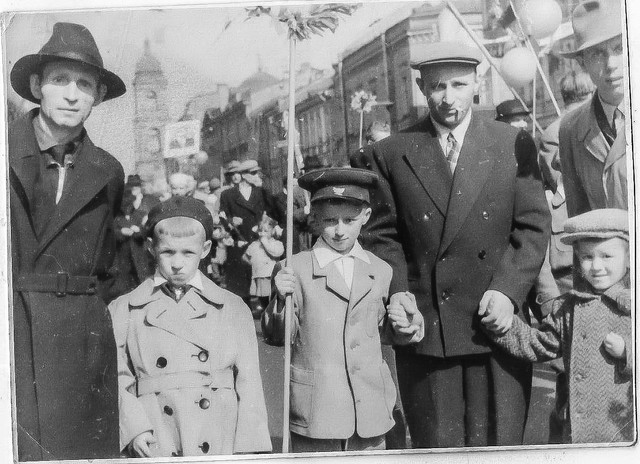
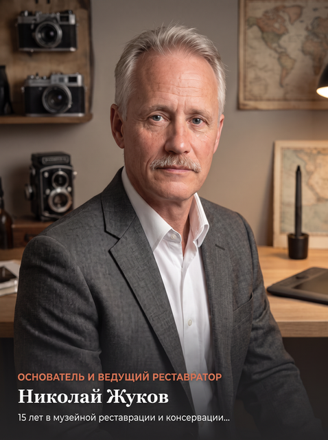

Возвращаю к жизни снимки семейного альбома
Ювелирная ручная реставрация заломов, трещин и пятен, исторически выверенная колоризация черно-белых снимков и деликатное 4K-оживление лиц с сохранением подлинной души фотографии.
Без спама и звонков — расчет и превью сразу в мессенджер
Реставрация старого фото (Ленинград, 1959 г.)
Устранены нерезкость, блёклость, заломы • Восстановление фото • Детализация 4K


Преимущества мастерской РетроВзгляд
Мы объединяем академическое художественное мастерство ручной ретуши и передовые нейросети, чтобы каждый снимок обретал новую жизнь без потери исторической правды.
Ювелирная ручная ретушь
Никакого «мыльного пластика» стандартных фильтров. Мастер вручную вырисовывает микротекстуру кожи, форму ресниц, пряди волос и ткань одежды.
Историческая колоризация
Мы не просто раскрашиваем фото: сверяем по архивным справочникам цвет одежды и нюансы оттенков эпохи для 100% достоверности.
Живой портрет (Motion)
Оживляем застывшие снимки: естественный глубокий взгляд, мягкое дыхание и теплая улыбка. Трогательный подарок родителям и потомкам.
Оригинал в полной безопасности
Вам не нужно отправлять ценную реликвию почтой. Достаточно переснять на телефон дома при хорошем свете (отсканировать в файл).
Бесплатная оценка и превью
Для проверки Вам отправляется превью пониженного качества с водяным знаком; оплата только после утверждения.
Печать на музейной бумаге
Готовим файл в сверхвысоком разрешении (до 300-600 DPI) для широкоформатной печати на бескислотной фотобумаге со стойкостью до 100 лет.
Сомневаетесь в качестве или сохранности снимка?
Пришлите фото прямо сейчас — мастер бесплатно проведет диагностику состояния бумаги и покажет, что можно восстановить.
Сравнение результатов «До» и «После»
Перемещайте интерактивный бегунок, чтобы оценить ювелирную точность ручной ретуши и реалистичность оттенков.
Реставрация старого фото (Ленинград, 1959 г.)
О проделанной работе
Глубокая ручная реставрация фотографии.
- Глубокая ручная реставрация фотографии
- Устранение пятен и царапин
- Восстановление черт лица и текстуры кожи
- Повышение резкости и детализации 4K
«Живой портрет» — когда прошлое смотрит вам в глаза
Мы превращаем статичный снимок из альбома в трогательное 4K-видео с естественной мимикой, теплым морганием глаз и нежной улыбкой.
Анатомически точная мимика
Никаких неестественных искривлений: движение головы и век рассчитывается по законам портретной анатомии.
Идеальный подарок на семейный юбилей
Видео вызывает невероятно теплые слезы радости у родителей, бабушек и дедушек.
Формат MP4 Ultra HD + Музыкальное сопровождение
Готово для отправки в Telegram/WhatsApp, показа на семейном празднике или создания видеокниги.
Калькулятор оценки стоимости
Переснять на телефон (отсканировать в файл) и рассчитать точную стоимость реставрации за 1 минуту.
Переснять на телефон (отсканировать в файл) и загрузить
Можно выбрать сразу несколько фото (JPG, PNG, WEBP, HEIC)
Устранение заломов, трещин, пятен и повышение резкости
Исторически достоверный подбор оттенков кожи, одежды и наград
Естественный живой взгляд, моргание и легкая улыбка (10 сек MP4)
Увеличение разрешения без потери резкости под рамку 30×40 или 40×60 см
Приоритетная внеочередная работа мастера
🛡️ Для проверки Вам отправляется превью пониженного качества с водяным знаком; оплата только после утверждения.
🔒 Ваши фотографии конфиденциальны и не передаются третьим лицам.
Как происходит реставрация фото
Всего 4 простых шага, чтобы сохранить драгоценные воспоминания для ваших детей и внуков.
Переснять на телефон (отсканировать в файл)
Вам достаточно переснять на телефон старый снимок при дневном свете без вспышки и бликов (отсканировать в файл).
Бесплатная оценка мастера
Пришлите файл в мессенджер или через форму. Мастер Николай Жуков оценит снимок и назовет точную стоимость в течение 20 минут после получения фото.
Бережная ручная реставрация
Мастер послойно устраняет дефекты, восстанавливает утраченные фрагменты лица, выполняет колоризацию или оживление.
Проверка превью и оплата
Для проверки Вам отправляется превью пониженного качества с водяным знаком; оплата только после утверждения.
Тарифные пакеты реставрации
Точная стоимость всегда фиксируется до начала работы после бесплатной оценки снимка.
Реставрация фото
Удаление заломов, трещин и царапин
- Удаление трещин, заломов, пыли и царапин
- Устранение пятен, выцветания и желтизны
- Восстановление резкости, контраста и деталей
- Для проверки: превью с водяным знаком
- Оплата только после вашего утверждения
Колоризация ч/б
Исторически достоверные цвета
- Ручной подбор оттенков кожи, волос и глаз
- Историческая точность военной формы и наград
- Естественные мягкие цвета без искажений
- Для проверки: превью с водяным знаком
- Оплата только после утверждения
Оживление в видео
Живой портрет (Motion 4K)
- Естественный живой взгляд, мимика и улыбка
- 4K видеоролик MP4 длительностью 10 секунд
- Наложение ностальгической музыки по желанию
- Для проверки: превью с водяным знаком
- Оплата только после утверждения
Комплекс «Всё включено»
Реставрация + Цвет + Оживление
- Полная реставрация любой сложности
- Историческая художественная колоризация
- Оживление портрета в 4K видеоролик
- Подготовка к широкоформатной печати
- Для проверки: превью с водяным знаком
- Оплата только после утверждения

Николай Жуков
«Для меня старая фотография — это не просто бумага, а нить связи с корнями»
Здравствуйте! Меня зовут Николай. Мой путь начался с восстановления сильно поврежденного семейного альбома. С тех пор я понял, насколько бесценен каждый уцелевший снимок для семьи.
Я категорически против слепого применения автоматических нейросетевых фильтров, которые превращают живые лица предков в восковые маски. В нашей мастерской каждая морщинка, каждый взгляд, пуговица на гимнастерке и оттенок платья восстанавливаются вручную на графическом мониторе с точностью до отдельного пикселя.
Бережность и уважение
Сохраняем подлинные эмоции и индивидуальность человека без искусственных искажений.
Личная ответственность
Я лично проверяю каждый файл перед отправкой и вношу любые правки бесплатно.
Слезы радости и благодарности
Настоящие отзывы семей, которым мы помогли сохранить память об их предках.
«Огромная благодарность Николаю! На единственном фото дедушки 1944 года была оторвана половина лица и глубокая трещина. Когда мама увидела восстановленный цветной портрет и видео, где дедушка улыбается — она расплакалась от счастья. Это бесценно для нашей семьи.»

Елена Васильева
Санкт-Петербург«Заказывал реставрацию и колоризацию 8 фотографий к золотой свадьбе родителей. Работа выполнена невероятно аккуратно, цвета естественные, одежда выглядит настоящей. Напечатали на плотной бумаге в красивой коробке. Родители были в восторге!»

Дмитрий Соколов
Москва«Функция «живое фото» — это настоящая магия! Глаза двигаются так живо и естественно, словно человек смотрит сквозь время прямо на тебя. Очень чуткий подход, мастер сразу понял все пожелания и исправил даже мелкую родинку на щеке.»

Анна Мельникова
ЕкатеринбургХотите так же порадовать своих близких уникальным памятным подарком?
Ответы на популярные вопросы
Все, что нужно знать перед тем, как доверить нам реставрацию снимков.
Нет, оригиналы фотографий всегда остаются у вас дома в полной безопасности! Достаточно переснять на телефон при хорошем дневном свете без бликов (отсканировать в файл) либо отсканировать его с разрешением 300–600 DPI.
Не нашли ответ на свой вопрос?
Напишите мастеру напрямую — Николай ответит на любые технические детали в течение 15 минут.